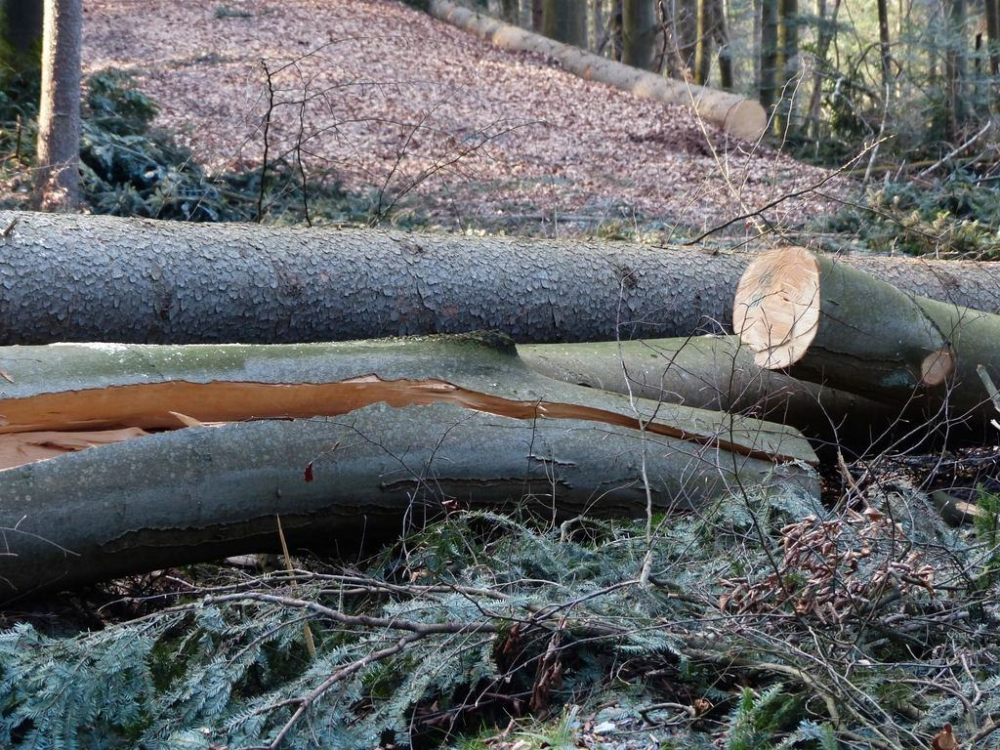
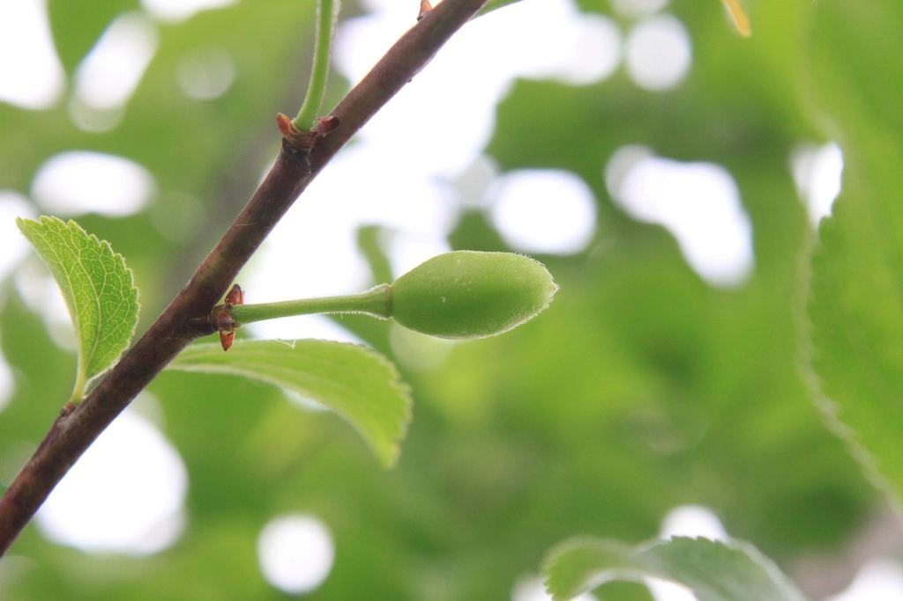
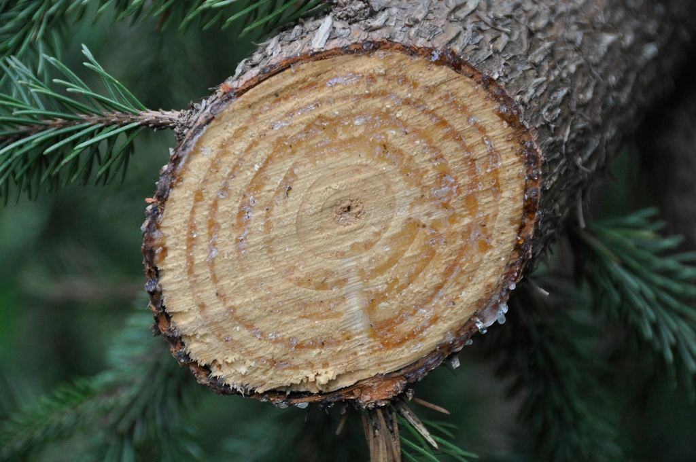
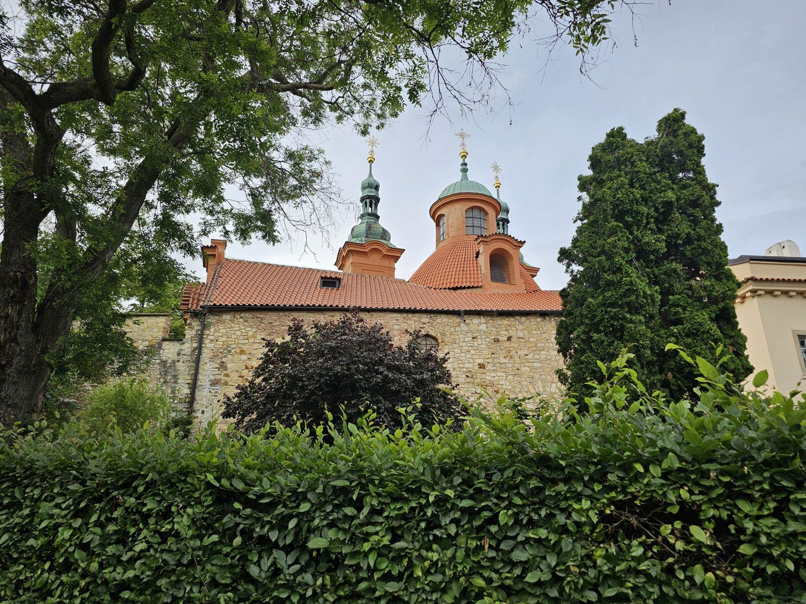
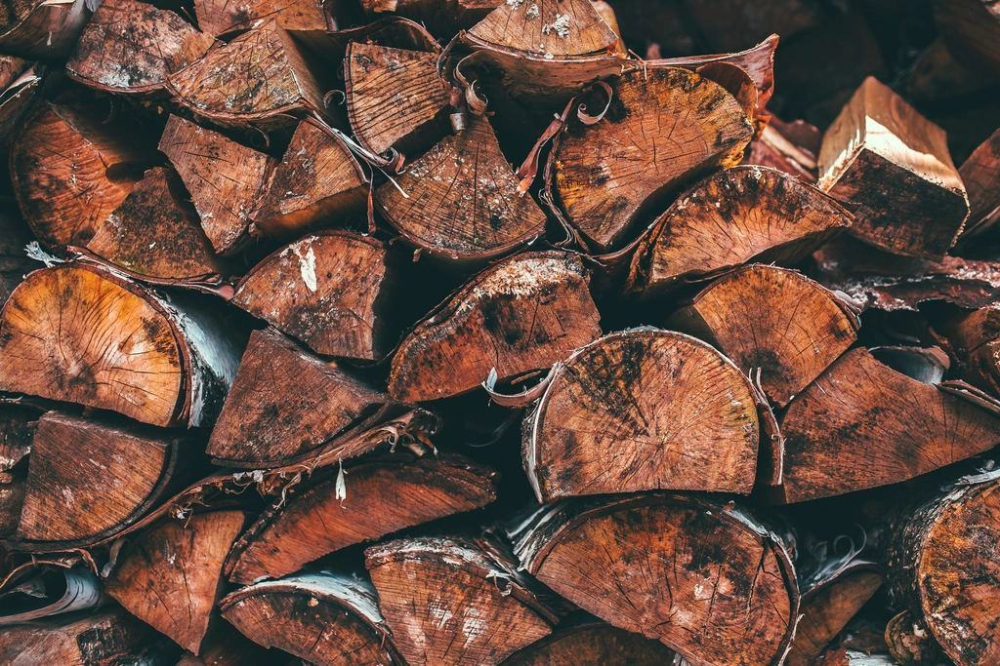
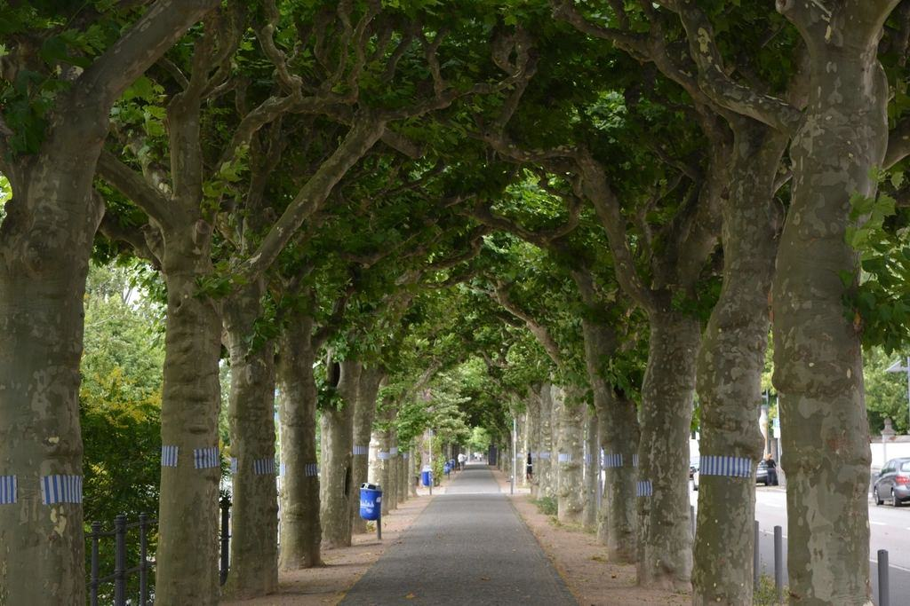

Tjänster
I dag är vi nio anställda med två jourlag, en kranbil och en grävlastare med tumgrip. Mellan stormarna gör vi samma sak som andra arborister – men med extra fokus på vindutsatta tallar, klibbal och popplar som planterades som läplantering på 1960-talet.
Akut eller planerat?

Akuta stormskador
Ett träd som ligger över ett tak är under spänning och kan röra sig när man börjar såga. Vi avlastar stammen med kran innan vi kapar.
Under stormen Malik i januari 2022 hade vi 64 utryckningar på fyra dygn.

Säkra inför vintern
De flesta träd som välter i en storm visade tecken redan innan: lutning, rotlyft eller röta vid stambasen. Vi går igenom tomten i september och oktober.
Kunder med serviceavtal får förtur i jourkön.

Kustnära trädvård
Salt och sand sliter på barken och gör tallarna ensidiga. Vi beskär så att vindlasten fördelas jämnare över kronan.
Vi arbetar mycket i sommarstugeområden i Skrea, Olofsbo och Ugglarp.

Upparbetning och ved
Stormfällda träd blir ofta fin ved. Vi kapar, klyver och staplar på tomten eller köper virket och drar av värdet på fakturan.
Tallstammar över 25 cm går till sågverket i Vessigebro.
Så hanterar vi ett träd på taket
- 1

Du ringer eller skickar bild
Vid jour prioriterar vi träd mot hus, el och väg. Planerade jobb får tid för besiktning inom en vecka.
- 2

Säkring
Först gör vi platsen säker: stänger av, avlastar spänningar och kontaktar nätbolaget om ledningar berörs.
- 3

Fällning och lyft
Kranbil eller klättrare beroende på läge. Stammar som ligger på tak lyfts alltid innan de kapas.
- 4

Städning och papper
Vi fräser, krattar och skickar foton och faktura i format som försäkringsbolagen godkänner.
Utbildade för stormfällda träd
- European Tree WorkerLagledarna är ETW-certifierade och utbildade i fällning av vindfällen.
- Motorsågskörkort DAlla fältarbetare har körkort för motorsåg nivå D för stormskadad skog.
- Arbete nära elledningUtbildade enligt ESA Fortsättning för arbete i närheten av ledningar.
- Ansvarsförsäkring 10 MkrTäcker skador på byggnader, fordon och tredje man under både jour och planerade jobb.